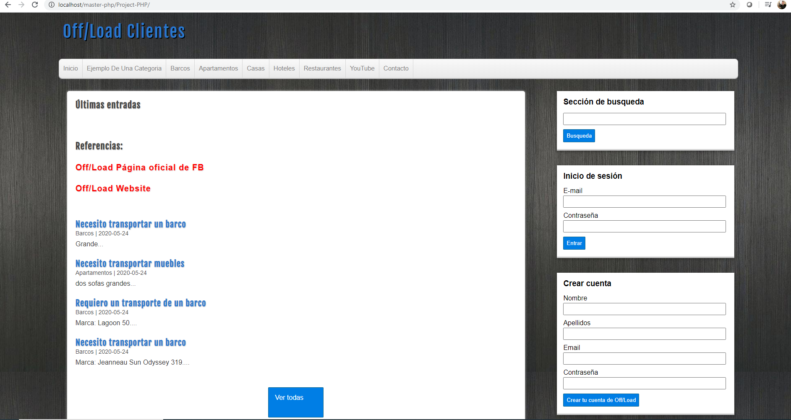
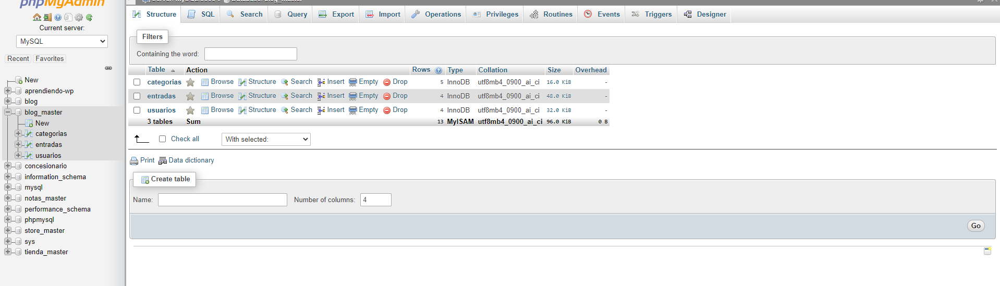
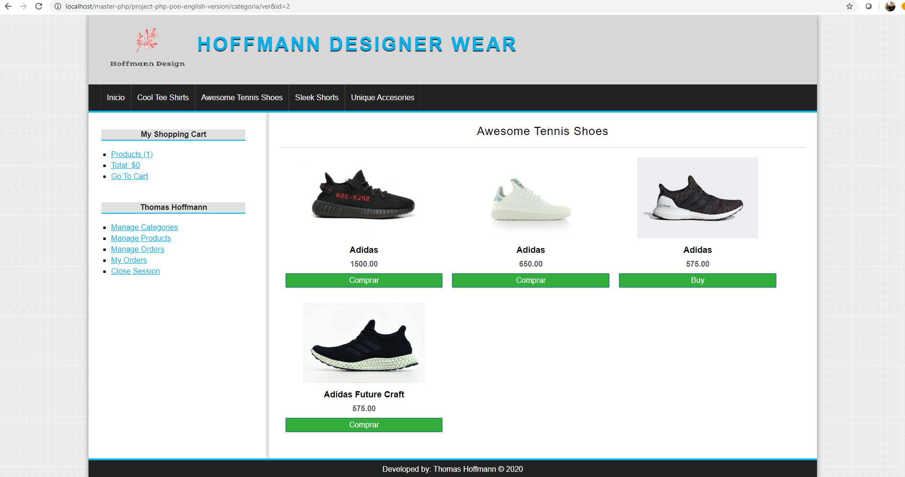
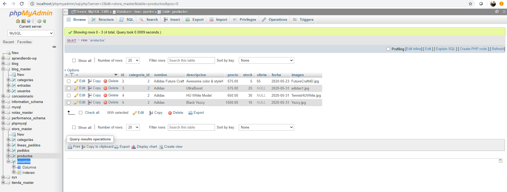

Hi There!

My name is Thomas Hoffmann and I am a responsible developer, organized, able to create blogs, web apps, websites and learn new frameworks. I mainly use JavaScript, HTML5 with CSS but now I am starting to program with PHP, and so far I am enjoying it. The frameworks that I have used are Angular 9, Laravel and jQuery. My ideal job is a place where I am able to work in I.T. department creating dynamic and flexible blogs and 4D web apps at low cost as well as being able to create and manage databases with impenetrable security.. By the way, check out some of my work.
Work Experience

• Hotel Victoria Inn - Developing a family project hotel business under managing and supervising labors.
Administration - Organizing inventories, exceptional time management, self motivated, in charge of computer system, webpage, blog and social media management, supervision of all the hotel repairs as well as customer service.
Handled database and Web site programming tasks (Primarily using JavaScript, HTML 5, Node.JS and Angular 9), Implemented UI design using HTML and CSS working an average of 15 hours per week.
• Business Analyst - Remote job at private Canadian web hosting company - Quebec, Canada
Developed new procedures for requirements gathering, needs analysis, testing, scripting and documentation to strengthen quality and functionality of business applications.
Handled estimates for customers that solicited jobs and created release notes for the finished projects.
Developed SOP sales projects and analyzed daily tasks.
Tracked and monitored new and finished development project orders including production plans to ensure proper system flow and delivery.
Customized Product Options for company websites.
About
 • I have several certificates :
• I have several certificates :
- Web Application Developer
- Master in Javascript, Jquery, JqueryUI, Angular, Node.JS
- University certificate in creation and development of companies
- Advanced English.
• I am a hard working person, with positive attitude and I enjoy learning new information technology and I am planning to learn new side server frameworks, programming languages, libraries and 4D Cinema website.
• I have worked with framework Angular 9 platform to add libraries using Node.JS and MongoDB to configure a VPS server and to add typescript libraries.
• I´ve also practiced with JQuery-Interface-UI (Fun Stuff)...
Selectors, how to select labels, select classes, practice making events, mouse, hover, click, and move.
• Made requests with AJAX, AJAX load method, get requests with AJAX in JQuery.
• Used Typescript and practiced with object-oriented programming.
• I like to use Symfony 3 to upload and publish web projects using hostinger and filezilla.
• Built Web responsive Websites and Blogs and connected them to MySQL database. (Haven´t had time to store all my work on Github, but am planning to manage that soon. Anyways, my profile is located at Github
Technical
 PHP – Created a transportation company blog.
PHP – Created a transportation company blog.
JavaScript – Created various personal websites including a Doctor’s website.
JavaScript / HTML5 Created a Tetris and Space Invaders game.
MySQL – Created various databases connecting blogs and websites.
HTML 5 – Designed various websites and styling it with CSS including.
Angular 9 – Created a transportation webapp and connected a Mongo / Robo 3T Database to it.
Wordpress – Created some blogs and telephone company website.
Contact
Project 1
This is one of my various projects that I have created, it is programmed with PHP y MySQL.

It is a front / backend project for a small business prototype.

Project 2
This other project is a designer store prototype programmed also with PHP- POO and MySQL and it has an e-commerce built in.

Database that connects to the store.
